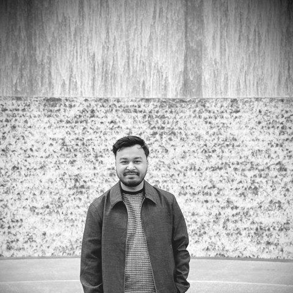

Most of my work happens through High Frequency Radar (HFR), watching how the Gulf of Mexico shelf responds to atmospheric forcing, occasionally a very long day on a boat.

PhD Student, Department of Oceanography and Coastal Sciences Louisiana State University